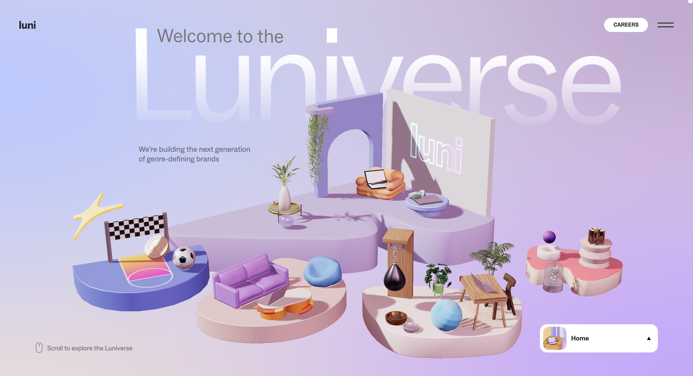
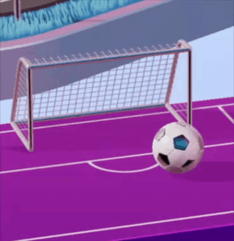
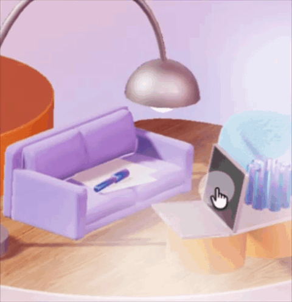

INTERACTIVE MEDIA 1
Interactive Experience Research Project
This research explores Luni, an interactive 3D website that uses playful interactions, visual design and immersive environments to create an engaging digital experience.
START EXPLORING ↓
First Impressions & Actions
01. What was the first thing you paid attention to when interacting with the experience?
The first thing that caught my attention was the detailed 3D models, which were very interesting and visually appealing. They were separate from the usual static images and were interactive, they moved when I moved my mouse around the screen. This instantly made the site seem more interactive and fun than a regular business website. I wondered if there were other interactions I could find that would have different effects.
My Interaction Timeline
Scrolled down the page
Moved the mouse around the screen
Hovered over different elements
Clicked interactive elements
Explored the 3D models
Tried small interactive activities
Followed arrows and visual prompts
Continued scrolling to explore new sections
Interaction Examples
03. What part of the experience did you spend the most time engaging with?



I spent the most time on the 3D models and the little interactive activities. I was curious about the reaction of the objects when I made mouse movements, clicks or scrolled. The idea was to try the same elements again, as different actions resulted in different visual reactions. This was more interesting to me than just reading the text on the website, and it made these interactive sections more interesting.
04. What was the most common action in your two-minute interaction with the experience?
I used scrolling and moving the mouse the most. The majority of the site is navigable with just these two simple options so I didn't have to master any complicated controls. I made a habit of moving the mouse around a lot, to see if it would react as I moved the mouse in different directions. The scrolling also was integral as it enabled me to flow from area to area and uncover new material.
Purpose
&
Communication
05. What is your impression of the intended primary goal of the interactive experience?
I believe the key objective of this interactive experience is to introduce the company, its project and its creative persona in an interesting and memorable manner. The experience doesn't rely on a conventional company website that offers information, but rather on interactive components that catch the user's eye. The visual design is also playful, showing the personality of the company and giving the user an idea of the type of creative work that the company produces.
06. How does the interactive experience communicate this primary goal?
The purpose is clearly communicated through in-depth 3D models, interactive elements, animation and engaging visual design. Each section is different, a user feels differently while scrolling through the website. The interactive effects also stimulate people to explore rather than to read information. These decisions are all part of the process that communicates that the company is creative, experimental and passionate about providing unique digital experiences.
Time
&
User Guidance
07. What is your impression of how the experience should be interacted with over time?
I think this experience is intended for shorter short interactions rather than extended use time. Every individual interaction is quick and takes little time to understand. Each section though has various visual styles and effects, so if users are interested, they might spend more time browsing the website. Users could also visit the website again to try out some of the interactions that they may not have tried the first time.
08. How does the interactive experience communicate how it should be interacted with over time?
The website uses familiar interaction patterns including scrolling, mouse movement and arrows. Users can easily understand the meaning behind the steps without having to read through long written instructions. The content and interactivity appear as the user continues to scroll down, promoting additional exploration. The simple controls also make it easy to navigate from part to part quickly and efficiently.
Media References & User Experience
09. What other media forms does the experience reference?
The experience references video games, 3D animation and interactive digital media. Its exploratory navigation and playful interactions make the website feel more like an interactive digital experience than a traditional company website.
10. What do these references communicate about how you should act when engaging with the experience?
Similar to a game, I feel encouraged to experiment with different actions to discover what will happen. I naturally move my mouse around, hover over objects, click different elements and scroll through the page. This makes me more involved in the experience because I am actively discovering the content myself.
11. What do these references communicate about how you should feel when engaging with the experience?
They make the experience feel playful and creative. The different visual effects also create a sense of curiosity because I do not always know what will happen next. This atmosphere makes exploring the website more enjoyable and also helps communicate the company's creative identity.
Personal Reflection
12. What is the most frustrating part of the interaction, and what makes it frustrating?
The most frustrating part is that some interactive elements are not immediately obvious. Sometimes I need to move the mouse around or experiment before I understand what can be interacted with, which can make the navigation slightly confusing.
13. What is the most satisfying part of the interaction, and what makes it satisfying?
The most satisfying part is seeing the 3D models and visual elements move instantly in real time as I move. By moving the mouse, scrolling or doing different things, they can get different visual responses, making the website feel responsive and alive. I particularly enjoy discovering an effect that I wouldn't have thought of because it's unexpected and kind of surprises you. This instant feedback keeps me exploring further and further on the site.